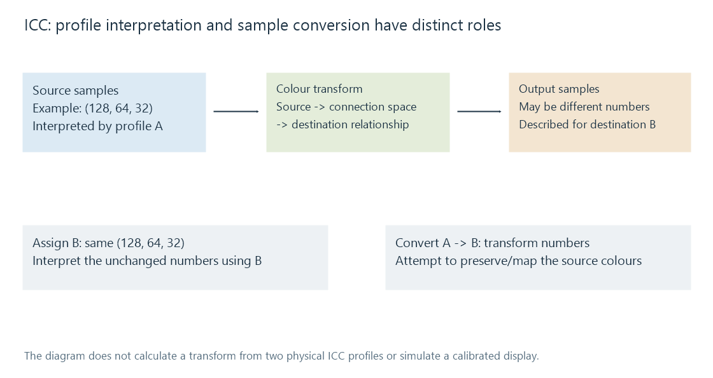

ICC color profiles
An ICC profile describes a colour relationship used by a colour-management process to interpret source samples and prepare values for a destination.
Two applications can decode the same RGB sample values and show different colours if they interpret those values differently. An ICC profile describes a colour relationship for a colour-management process; it is not another set of photographic pixels.
The application needs to use the description at the relevant processing boundary. Merely carrying the profile in the file does not perform a conversion.
Source and destination have different roles
A source profile describes how the supplied image values relate to a defined colour interpretation. A destination profile describes the target's corresponding relationship.
The conventional ICC architecture connects transforms through a profile connection space, based on specified CIE colour representations. This allows source and destination descriptions to be combined.

The profile's fields can describe curves, matrices or lookup-based relationships as applicable. ICC.1:2022 defines the referenced version-4 profile format. This architecture is broader than assuming every file uses one simple RGB matrix.
Assignment changes meaning; conversion changes representation
Suppose a file contains the sample triplet (128, 64, 32) interpreted using source profile A.
| Operation | Sample numbers | Intended effect |
|---|---|---|
| Assign profile B without transforming | Remain (128, 64, 32) | Interpret those numbers according to B |
| Convert from A to B | Can change | Express the source colours in B's representation |
| Remove the profile | Remain, unless another operation changes them | Leave the reader to its applicable fallback interpretation |
Assigning a different label cannot by itself preserve the original colour meaning. Conversion attempts to preserve or suitably map that meaning, within the target's limits.
This is also why attaching an sRGB label to arbitrary wide-gamut values is different from converting those values into sRGB. The label says what the numbers mean; it does not silently calculate the required replacement numbers.
A destination may not contain every source colour
If a source colour is outside the target gamut, exact reproduction in that target is unavailable. The transform's rendering policy determines how it maps that colour.
Different policies can prioritize different reproduction relationships. The useful comparison includes the actual source profile, destination, intent and display environment, rather than judging only whether an ICC chunk exists.
A source profile also is not a universal creative correction. It does not remove blur, recover clipped detail or know which artistic look the photographer intended.
Derivatives need a coherent new description
An image-processing route may convert samples to a selected output colour space and encode a browsing derivative. That output needs colour signaling consistent with the new numbers.
Keeping the old source profile after changing the representation can mislabel the derivative. Discarding the profile while leaving the original numbers can instead invite a different fallback interpretation.
For Emby photos/artwork, examine the original resource, server-generated image and app/operating-system presentation. A difference can arise where the profile was ignored, converted inconsistently or replaced, even though image decompression itself succeeded.
Precision and HDR are related but independent
More sample precision can help represent intermediate colour values with less rounding. It does not identify a source profile, and a profile is not automatically an instruction that every display should show HDR highlights.
The HDR still-image article adds luminance interpretation, gain maps and output headroom to that chain. Resizing also distinguishes averaging encoded values from averaging light; a coherent colour label does not specify every arithmetic choice performed earlier.